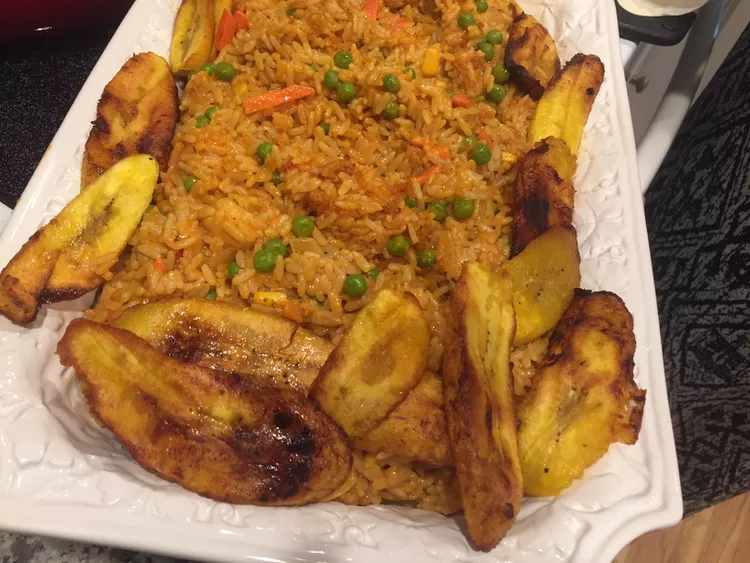

Jollof Rice

Description
Delicious West African jollof rice with chicken, mixed vegetables, and fried plantains. Serves 8.
Ingredients
- 2 pounds chicken drumsticks
- ½ large onion, diced
- 1 (2 inch) piece fresh ginger root, peeled and thinly sliced
- 2 cubes chicken bouillon, crushed
- 2 cloves garlic, diced
- 1 tablespoon curry powder
- 1 teaspoon herbes de Provence
- Freshly ground black pepper
- 1 pinch cayenne pepper
- 1 cup water
- 3 tablespoons vegetable oil
- ½ large onion, diced
- 1 (14 ounce) can tomato sauce
- 1 (14 ounce) can coconut milk
- 1 teaspoon herbes de Provence
- 1 teaspoon salt, or to taste
- ½ teaspoon ground black pepper, or to taste
- 3 cups parboiled rice (such as Uncle Ben's®)
- 1 (10 ounce) package frozen mixed vegetables (carrots, corn, peas)
- 4 ripe plantains, peeled and cut diagonally into 1/2-inch slices
- ½ cup canola oil for frying
Steps
- Place chicken drumsticks in a large Dutch oven over medium heat. Add ½ onion, ginger, crushed bouillon cubes, garlic, curry powder, 1 teaspoon herbes de Provence, black pepper, and cayenne pepper. Mix well and cook until chicken starts sticking to the bottom, about 5 minutes. Pour in water, mix, cover, and simmer for 15 minutes. Remove from heat.
- Transfer chicken to a baking dish using a slotted spoon. Strain the cooking liquid through a fine-mesh sieve, reserving 1 ½ cups, and discard solids.
- Preheat oven to 400°F (200°C) and bake chicken until no longer pink and juices run clear, about 30 minutes. Check doneness with a thermometer (165°F / 74°C).
- Heat 3 tablespoons vegetable oil in a large pot over medium-low heat. Cook ½ onion until soft and translucent (about 5 minutes). Add tomato sauce and cook until slightly thickened, 5–7 minutes.
- Stir in reserved chicken broth, coconut milk, 1 teaspoon herbes de Provence, salt, and pepper. Bring to a simmer and add rice. Cook, stirring often, until rice is almost tender (15–20 minutes). Add frozen vegetables and continue cooking until rice is tender and creamy, about 5 minutes.
- Heat ½ cup canola oil in a nonstick pan over medium heat. Fry plantains on both sides until golden and crispy (2–3 minutes per side). Drain on paper towels.
- Garnish jollof rice with fried plantains and serve with baked chicken.
Home